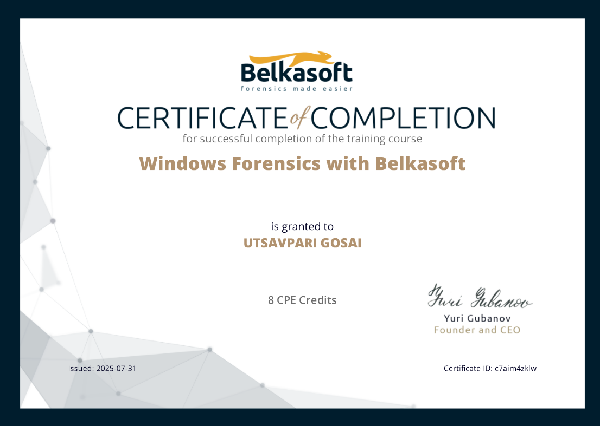
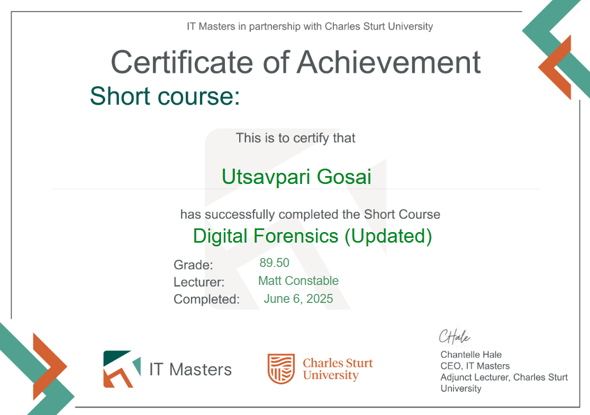
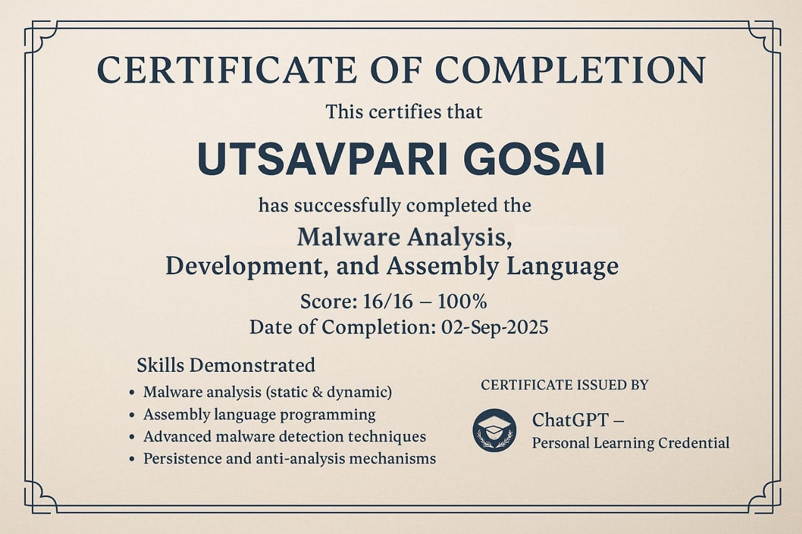

Hello Hackers 👋💻
I hope you all are doing well and continuously keeping our digital landscape safe and secure 🔐🌍
Today, I want to share my journey of passing the Digital Forensics, Cyber Crime Investigation, and Malware Analysis & Development exams conducted by Belkasoft and Charles Sturt University and how curiosity pushed me into a completely new domain of cyber security 🕵️♂️🦠
🚀 My Background & Curiosity
I come from the Application Security domain within cyber security. However, I was always curious about Digital Forensics, Cyber Crime Investigation, and Malware Analysis.
To explore this field properly, I decided not just to read random blogs. but to pursue structured certifications and hands-on learning 📚✨
💻 Belkasoft Windows Forensics Course
I reached out to some of my LinkedIn connections already working in digital forensics. One of them suggested enrolling in the Belkasoft Windows Forensics Course, which usually costs around $800–$900 💰
Fortunately, it was being offered for free on their official website but only for 30 days ⏳
I enrolled and completed almost 99% of the course. Unfortunately, after 30 days, when I logged into my dashboard, everything had disappeared. I didn’t realize it wasn’t lifetime access 😔
I had completed the course content but missed the final exam. It felt terrible because I had not carefully read the Terms & Conditions.
After a few days, I decided to try one more time. I politely emailed their support team explaining my situation 📩
Thankfully, they responded positively and gave me 10 additional days to complete the exam and obtain the certificate 🙌🎉
Although I couldn’t receive the premium certificate (since the original period had expired), I successfully completed the course.
👉 Lesson Learned: Always read the Terms & Conditions carefully before enrolling in any course or certification 📑⚠️

🎓 Charles Sturt University Experience
My second certification journey was with Charles Sturt University (Australia) 🇦🇺 in collaboration with IT Masters.
The best part? The training was completely free 😍
The content was extremely detailed and covered practical investigation methodologies, forensic processes, and real-world cyber crime scenarios.
I highly recommend exploring this training if you're genuinely interested in Digital Forensics and Cyber Crime Investigation 🔍💡

🦠 Malware Analysis & Development Journey
After strengthening my foundation in forensics, I moved towards Malware Analysis and even Malware Development strictly for ethical and educational purposes 🧪💻
Finding structured and free resources in malware analysis was challenging. So I used ChatGPT to create a structured self-exam system to evaluate my understanding.
I combined research papers, technical blogs, videos, hands-on labs, and continuous practice to build strong foundational knowledge.

📚 Skills I Strengthened
- 🔍 Digital Forensics
- 🕵️ Cyber Crime Investigation
- 🦠 Malware Analysis
- ⚙️ Malware Development (Ethical Learning)
It is a vast field and learning truly never stops 🌊📚
🌟 Final Thoughts
This is just a part of my journey. I am still continuously learning and exploring new areas in cyber security.
My Other Exams & certifications with Learnings:
https://drive.google.com/drive/folders/1MiowOLHYOrLIyYJOT5JiSCwfO-6IeReXGrowth comes from curiosity, persistence, and learning from mistakes.
I hope you are also upgrading your skills every single day 🚀
If you have any questions or want guidance regarding Digital Forensics, Cyber Crime Investigation, or Malware Analysis feel free to reach out 🤝
Thank You,
MR. X FACTOR
🔗 Handles:
- Linktree: https://linktr.ee/mrxfact0r_99